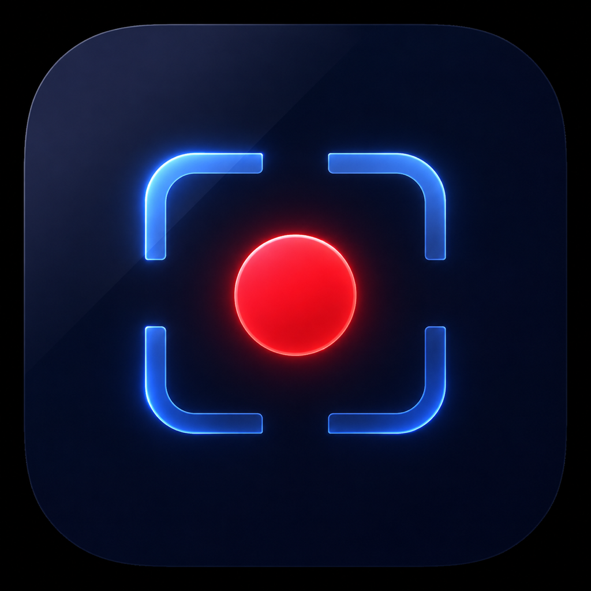

Nirvana Solutions product
Capture clearly.
Keep it private.
ScreenMint is a clean screen recorder for iPhone and iPad with flexible recording quality, audio controls, an organised library and essential on-device editing.

A capable recorder that stays simple.
Start with the Balanced preset or choose your own resolution, bitrate, frame rate, codec, countdown and audio source. ScreenMint shows storage information before recording and saves recordings in crash-resistant segments.
Recordings remain on your device unless you explicitly export or share them. ScreenMint has no advertisements, analytics, tracking, account or developer-operated cloud service.
Flexible quality
Use Storage Saver, Balanced or Best Quality, or configure the recording manually.
Audio choices
Choose system audio, microphone, both together or silent recording where iOS permits.
Organised library
Search, rename, favourite, sort, duplicate, protect and organise recordings into folders.
On-device editing
Trim, crop, rotate, merge, compress, add text and drawings, blur details and add callouts.
Private by design
No tracking or developer server. Exports happen only when you choose a destination.
Made for Apple devices
Designed for iPhone and iPad with dark mode, accessibility, keyboard and Pencil support.